Demonstration of the COMMA R Package
Created by Kimberly A. Hochstedler Webb. Contact: kah343@cornell.edu
2024-04-23
COMMA_demo.RmdIn this vignette, we provide a demonstration of the R Package COMMA (correcting misclassified mediation analysis). This package provides methods for estimating a mediation analysis when the binary mediator is potentially misclassified. Technical details about estimation are not included in this demonstration. For additional information on the methods used in this R Package, please consult ``Effect estimation in the presence of a misclassified binary mediator’’ by Kimberly A. Hochstedler Webb and Martin T. Wells.
Model and Conceptual Framework
Let \(X\) denote a predictor of interest. \(C\) denotes a matrix of covariates. \(Y\) is the outcome variable of interest. The relationship between \(X\) and \(Y\) may be mediated by \(M\). \(M = m\) denotes an observation’s true mediator value, with \(m \in \{1, 2\}\). We do not observe \(M\) directly. Instead, we observe \(M^*\), a potentially misclassified (noisy) version of \(M\). Given \(M\), a subject’s observed mediator value \(M^*\) depends on a set of predictors \(Z\). The true mediator, observed mediator, and outcome mechanisms are provided below.
\[\text{True mediator mechanism: } \text{logit}\{ P(M = 1 | X, \boldsymbol{C} ; \boldsymbol{\beta}) \} = \beta_{0} + \beta_{X} X + \boldsymbol{\beta_{C} C}\] \[\text{Observed mediator mechanisms: } \text{logit}\{ P(M^* = 1 | M = 1, \boldsymbol{Z} ; \boldsymbol{\gamma}) \} = \gamma_{110} + \boldsymbol{\gamma_{11Z} Z}, \\ \text{logit}\{ P(M^* = 1 | M = 2, \boldsymbol{Z} ; \boldsymbol{\gamma}) \} = \gamma_{120} + \boldsymbol{\gamma_{12Z} Z}\] \[\text{Outcome mechanism: } E(Y | X, \boldsymbol{C}, M) = \theta_0 + \theta_X X + \boldsymbol{\theta_C C} + \theta_M M + \theta_{XM} XM\] If we have a Bernoulli outcome that we model with a logit link, the outcome mechanism can be \(\text{logit}\{P(Y = 1 | X, \boldsymbol{C}, M) \} = \theta_0 + \theta_X X + \boldsymbol{\theta_C C} + \theta_m M + \theta_{XM} XM\).
Simulate data - Normal outcome
We begin this demonstration by generating data using the
COMMA_data() function. The binary mediator simulated by
this scheme is subject to misclassification. The predictor related to
the true outcome mechanism is “x” and the predictor related to the
observation mechanism is “z”.
library(COMMA)
library(dplyr)
set.seed(20240422)
sample_size <- 10000
n_cat <- 2 # Number of categories in the binary mediator
# Data generation settings
x_mu <- 0
x_sigma <- 1
z_shape <- 1
z_scale <- 1
c_shape <- 1
# True parameter values (gamma terms set the misclassification rate)
true_beta <- matrix(c(1, -2, .5), ncol = 1)
true_gamma <- matrix(c(1.8, 1, -1.5, -1), nrow = 2, byrow = FALSE)
true_theta <- matrix(c(1, 1.5, -2.5, -.2), ncol = 1)
# Generate data.
my_data <- COMMA_data(sample_size, x_mu, x_sigma, z_shape, c_shape,
interaction_indicator = FALSE,
outcome_distribution = "Normal",
true_beta, true_gamma, true_theta)
# Save list elements as vectors.
Mstar = my_data[["obs_mediator"]]
Mstar_01 <- ifelse(Mstar == 1, 1, 0)
outcome = my_data[["outcome"]]
x_matrix = my_data[["x"]]
z_matrix = my_data[["z"]]
c_matrix = my_data[["c"]]Effect estimation
We propose estimation methods using the Expectation-Maximization algorithm (EM) and an ordinary least squares (OLS) correction procedure. The proposed predictive value weighting (PVW) approach detailed in Webb and Wells (2024) is currently only available for Bernoulli outcomes in COMMA. Each method checks and corrects instances of label switching, as described in Webb and Wells (2024). In the code below, we provide functions for implementing these methods.
EM algorithm
# Supply starting values for all parameters.
beta_start <- coef(glm(Mstar_01 ~ x_matrix + c_matrix,
family = "binomial"(link = "logit")))
gamma_start <- matrix(rep(1,4), ncol = 2, nrow = 2, byrow = FALSE)
theta_start <- coef(lm(outcome ~ x_matrix + Mstar_01 + c_matrix))
# Estimate parameters using the EM-Algorithm.
EM_results <- COMMA_EM(Mstar, outcome, outcome_distribution = "Normal",
interaction_indicator = FALSE,
x_matrix, z_matrix, c_matrix,
beta_start, gamma_start, theta_start, sigma_start = 1)
EM_results$True_Value <- c(true_beta, c(true_gamma), true_theta, 1)
EM_results$Estimates <- round(EM_results$Estimates, 3)
EM_results## Parameter Estimates Convergence True_Value
## 1 beta_0 0.928 TRUE 1.0
## 2 beta_1 -1.942 TRUE -2.0
## 3 beta_2 0.491 TRUE 0.5
## 4 gamma11 1.749 TRUE 1.8
## 5 gamma21 1.197 TRUE 1.0
## 6 gamma12 -1.541 TRUE -1.5
## 7 gamma22 -0.830 TRUE -1.0
## 8 theta_0 1.017 TRUE 1.0
## 9 theta_x1 1.502 TRUE 1.5
## 10 theta_m -2.525 TRUE -2.5
## 11 theta_c1 -0.199 TRUE -0.2
## 12 sigma 0.993 TRUE 1.0OLS correction
# Estimate parameters using the OLS correction.
OLS_results <- COMMA_OLS(Mstar, outcome,
x_matrix, z_matrix, c_matrix,
beta_start, gamma_start, theta_start)
OLS_results$True_Value <- c(true_beta, c(true_gamma), true_theta[c(1,3,2,4)])
OLS_results$Estimates <- round(OLS_results$Estimates, 3)
OLS_results## Parameter Estimates Convergence Method True_Value
## 1 beta1 0.877 TRUE OLS 1.0
## 2 beta2 -1.794 TRUE OLS -2.0
## 3 beta3 0.493 TRUE OLS 0.5
## 4 gamma11 1.788 TRUE OLS 1.8
## 5 gamma21 1.361 TRUE OLS 1.0
## 6 gamma12 -1.484 TRUE OLS -1.5
## 7 gamma22 -1.487 TRUE OLS -1.0
## 8 theta0 0.882 TRUE OLS 1.0
## 9 theta_m -2.326 TRUE OLS -2.5
## 10 theta_x 1.581 TRUE OLS 1.5
## 11 theta_c1 -0.203 TRUE OLS -0.2Compare results
NormalY_results <- data.frame(Parameter = rep(c("beta_x", "theta_x", "theta_m"),
3),
Method = c(rep("EM", 3), rep("OLS", 3),
rep("Naive", 3)),
Estimate = c(EM_results$Estimates[c(2, 9, 10)],
OLS_results$Estimates[c(2, 9, 10)],
beta_start[2], theta_start[c(2,3)]),
True_Value = rep(c(true_beta[2],
true_theta[2], true_theta[3]),
3))
ggplot(data = NormalY_results) +
geom_point(aes(x = Method, y = Estimate, color = Method),
size = 3) +
geom_hline(aes(yintercept = True_Value),
linetype = "dashed") +
facet_wrap(~Parameter) +
theme_minimal() +
scale_color_manual(values = c("#DA86A5", "#785E95", "#409DBE")) +
ggtitle("Parameter estimates from EM, OLS, and Naive approaches",
subtitle = "Normal outcome model with a misclassified mediator")
Simulate data - Bernoulli outcome
Next, we generate data with a Bernoulli outcome using the
COMMA_data() function. Once again, the binary mediator
simulated by this scheme is subject to misclassification. The predictor
related to the true outcome mechanism is “x” and the predictor related
to the observation mechanism is “z”.
library(COMMA)
library(dplyr)
set.seed(20240423)
sample_size <- 10000
n_cat <- 2 # Number of categories in the binary mediator
# Data generation settings
x_mu <- 0
x_sigma <- 1
z_shape <- 1
z_scale <- 1
c_shape <- 1
# True parameter values (gamma terms set the misclassification rate)
true_beta <- matrix(c(1, -2, .5), ncol = 1)
true_gamma <- matrix(c(1.8, 1, -1.5, -1), nrow = 2, byrow = FALSE)
true_theta <- matrix(c(1, 1.5, -2.5, -.2, .5), ncol = 1)
# Generate data.
my_data <- COMMA_data(sample_size, x_mu, x_sigma, z_shape, c_shape,
interaction_indicator = TRUE,
outcome_distribution = "Bernoulli",
true_beta, true_gamma, true_theta)
# Save list elements as vectors.
Mstar = my_data[["obs_mediator"]]
Mstar_01 <- ifelse(Mstar == 1, 1, 0)
outcome = my_data[["outcome"]]
x_matrix = my_data[["x"]]
z_matrix = my_data[["z"]]
c_matrix = my_data[["c"]]Effect estimation
We propose estimation methods using the Expectation-Maximization algorithm (EM) and a predictive value weighting (PVW) approach. The ordinary least squares (OLS) correction procedure is only appropriate for Normal outcome models. Each method checks and corrects instances of label switching, as described in Webb and Wells (2024). In the code below, we provide functions for implementing these methods.
EM algorithm
# Supply starting values for all parameters.
beta_start <- coef(glm(Mstar_01 ~ x_matrix + c_matrix,
family = "binomial"(link = "logit")))
gamma_start <- matrix(rep(1,4), ncol = 2, nrow = 2, byrow = FALSE)
xm_interaction <- x_matrix * c_matrix
theta_start <- coef(glm(outcome ~ x_matrix + Mstar_01 + c_matrix +
xm_interaction,
family = "binomial"(link = "logit")))
# Estimate parameters using the EM-Algorithm.
EM_results <- COMMA_EM(Mstar, outcome, outcome_distribution = "Bernoulli",
interaction_indicator = TRUE,
x_matrix, z_matrix, c_matrix,
beta_start, gamma_start, theta_start)
EM_results$True_Value <- c(true_beta, c(true_gamma), true_theta)
EM_results$Estimates <- round(EM_results$Estimates, 3)
EM_results## Parameter Estimates Convergence True_Value
## 1 beta_0 1.113 TRUE 1.0
## 2 beta_1 -2.012 TRUE -2.0
## 3 beta_2 0.493 TRUE 0.5
## 4 gamma11 1.698 TRUE 1.8
## 5 gamma21 1.036 TRUE 1.0
## 6 gamma12 -1.664 TRUE -1.5
## 7 gamma22 -1.550 TRUE -1.0
## 8 theta_0 1.067 TRUE 1.0
## 9 theta_x 1.565 TRUE 1.5
## 10 theta_m -2.538 TRUE -2.5
## 11 theta_c1 -0.205 TRUE -0.2
## 12 theta_xm 0.427 TRUE 0.5PVW approach
PVW_results <- COMMA_PVW(Mstar, outcome, outcome_distribution = "Bernoulli",
interaction_indicator = TRUE,
x_matrix, z_matrix, c_matrix,
beta_start, gamma_start, theta_start)
PVW_results$True_Value <- c(true_beta, c(true_gamma), true_theta)
PVW_results$Estimates <- round(PVW_results$Estimates, 3)
PVW_results## Parameter Estimates Convergence Method True_Value
## 1 beta_1 1.127 TRUE PVW 1.0
## 2 beta_2 -2.008 TRUE PVW -2.0
## 3 beta_3 0.489 TRUE PVW 0.5
## 4 gamma11 1.704 TRUE PVW 1.8
## 5 gamma21 1.016 TRUE PVW 1.0
## 6 gamma12 -1.740 TRUE PVW -1.5
## 7 gamma22 -1.517 TRUE PVW -1.0
## 8 theta_0 0.998 TRUE PVW 1.0
## 9 theta_x1 1.678 TRUE PVW 1.5
## 10 theta_m -2.463 TRUE PVW -2.5
## 11 theta_c1 -0.204 TRUE PVW -0.2
## 12 theta_xm 0.288 TRUE PVW 0.5Compare results
BernoulliY_results <- data.frame(Parameter = rep(c("beta_x", "theta_x",
"theta_m", "theta_xm"),
3),
Method = c(rep("EM", 4), rep("PVW", 4),
rep("Naive", 4)),
Estimate = c(EM_results$Estimates[c(2, 9, 10, 12)],
PVW_results$Estimates[c(2, 9, 10, 12)],
beta_start[2],
theta_start[c(2,3,5)]),
True_Value = rep(c(true_beta[2],
true_theta[2],
true_theta[3],
true_theta[5]),
3))
ggplot(data = BernoulliY_results) +
geom_point(aes(x = Method, y = Estimate, color = Method),
size = 3) +
geom_hline(aes(yintercept = True_Value),
linetype = "dashed") +
facet_wrap(~Parameter) +
theme_minimal() +
scale_color_manual(values = c("#DA86A5", "#785E95", "#ECA698")) +
ggtitle("Parameter estimates from EM, PVW, and Naive approaches",
subtitle = "Bernoulli outcome model with a misclassified mediator")